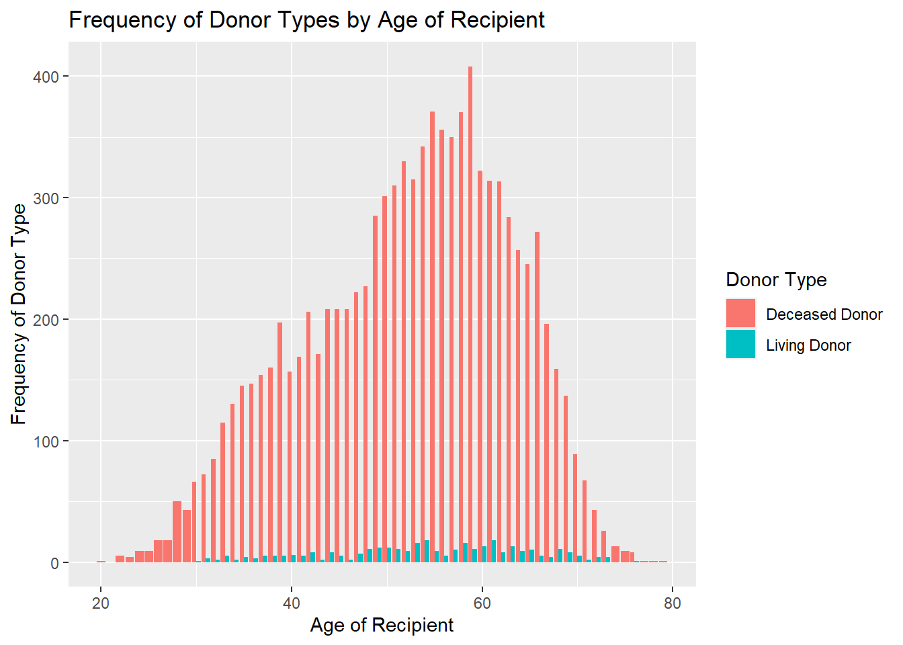
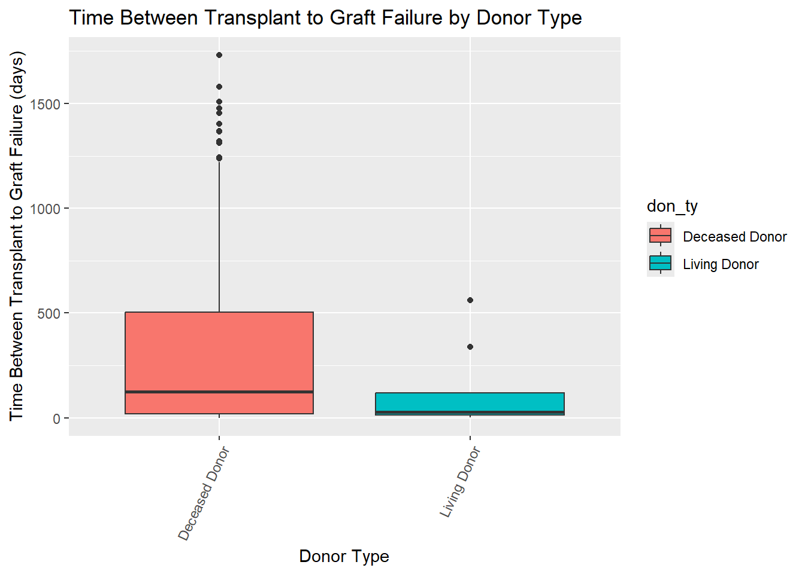
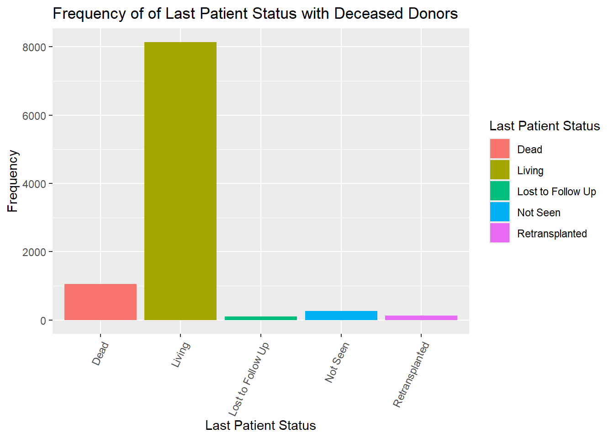
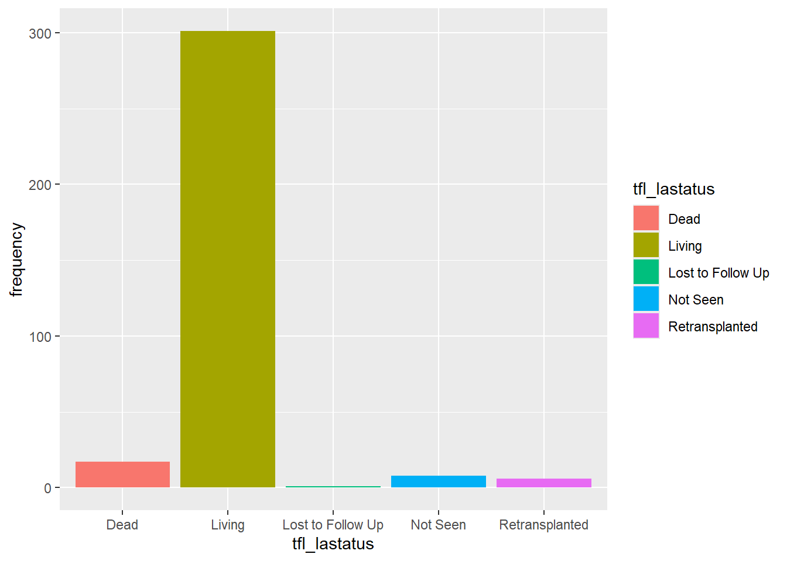

Donor Types of Liver Transplant Recipients
Liver Transplants from Living and Deceased Donors
# Load Packages
library(tidyverse)## ── Attaching core tidyverse packages ──────────────────────── tidyverse 2.0.0 ──
## ✔ dplyr 1.1.4 ✔ readr 2.1.5
## ✔ forcats 1.0.0 ✔ stringr 1.5.2
## ✔ ggplot2 3.5.2 ✔ tibble 3.3.0
## ✔ lubridate 1.9.4 ✔ tidyr 1.3.1
## ✔ purrr 1.1.0
## ── Conflicts ────────────────────────────────────────── tidyverse_conflicts() ──
## ✖ dplyr::filter() masks stats::filter()
## ✖ dplyr::lag() masks stats::lag()
## ℹ Use the conflicted package (<http://conflicted.r-lib.org/>) to force all conflicts to become errorslibrary(haven)
library(arsenal)##
## Attaching package: 'arsenal'
##
## The following object is masked from 'package:lubridate':
##
## is.Datelibrary(kableExtra)## Warning: package 'kableExtra' was built under R version 4.5.2##
## Attaching package: 'kableExtra'
##
## The following object is masked from 'package:dplyr':
##
## group_rows#Loads the Liver file
liver_data <-
read_sas("../../github/tx_li.sas7bdat")# This code chunk cleans the original liver dataset to create a consistent and tidy dataframe. This dataframe formats the date variables, identifies alcohol subtypes. It also filters the data for years from 2020, for recipients 18 years and older, and omits the alcohol subtype "Other".
# This cleans the data and identifies alcohol subtypes
tidy_liver_df=
liver_data|>
mutate(tx_date = as_date(REC_TX_DT),
listing_date = as_date(CAN_LISTING_DT),
tx_year = year(tx_date),
days_listed = as.numeric(difftime(tx_date, listing_date, units = "days")),
alcohol_subtype = case_when(CAN_DGN%in% c(4215, 4216) | CAN_DGN2 %in% c(4215, 4216) ~ "Alcohol-related Cirrhosis",
CAN_DGN == 4217 | CAN_DGN2 == 4217 ~"Acute Alcohol-related Hepatitis",
TRUE ~ "Other"))%>%
# This filters the data for years from 2020, for recipients 18 years and older, and omits the alcohol subtype "Other"
filter(!is.na(PERS_ID) & !is.na(tx_date) & tx_year >= 2020 & REC_AGE_AT_TX>= 18, alcohol_subtype !="Other")|>
arrange(PERS_ID, tx_date)|>
janitor::clean_names()# This creates a dataframe to observe patient status, donor types, and multi-organ transplants
pt_status_df =
tidy_liver_df |>
select(pers_id, don_ty, tx_date, rec_age_at_tx, rec_px_stat, rec_px_stat_dt, rec_tx_org_ty, alcohol_subtype, rec_cur_px_stat, tfl_lastatus, tfl_lafudate, tfl_graft_dt)|>
mutate(don_ty = case_match(
don_ty,
"C" ~ "Deceased Donor",
"L" ~ "Living Donor"),
tx_date = as.Date(tx_date),
rec_px_stat= case_match(
rec_px_stat,
"A" ~ "Living",
"R" ~ "Retransplanted",
"D" ~ "Dead",
"L" ~ "Lost",
"U" ~ "Unknown",
"X" ~ "Natural Disaster"),
tfl_lastatus= case_match(
tfl_lastatus,
"A" ~ "Living",
"R" ~ "Retransplanted",
"D" ~ "Dead",
"L" ~ "Lost to Follow Up",
"N" ~ "Not Seen"),
rec_cur_px_stat = case_match(
rec_cur_px_stat,
"A" ~ "Alive",
"D" ~ "Dead",
"F" ~ "Graft Failure: 1YR after graft failure",
"G" ~ "Graft Failure: graft failure",
"L" ~ "Lost",
"R" ~ "Retransplanted",
"S" ~ "Graft Failure: 2YR after graft failure"
))|>
filter(rec_tx_org_ty %in% c("LI", "KI LI 2LD", "KI LI", "KI LI IN", "KI LU", "KP LI", "KP LI IN", "LI HL", "LI HR", "LI IN", "LI LU", "PA LI", "PA LI IN", "PA LI LU"))|>
mutate(
multi_organ =as.factor(rec_tx_org_ty != "LI"))|>
mutate(
days_to_lafollow = as.numeric(difftime(tfl_lafudate, tx_date, units = "days")),
days_to_follow = as.numeric(difftime(rec_px_stat_dt, tx_date, units = "days")),
days_to_fail = as.numeric(difftime(tfl_graft_dt, tx_date, unit = "days")),
failed_graft = !is.na(tfl_graft_dt))Frequency of Living and Deceased Donors
# This code chunk creates a frequency table and column chart for the living vs deceased donor types.
pt_status_df|>
group_by(don_ty)|>
summarize(Fequency = n_distinct(pers_id))|>
knitr::kable()| don_ty | Fequency |
|---|---|
| Deceased Donor | 9613 |
| Living Donor | 333 |
pt_status_df|>
group_by(don_ty)|>
summarize(frequency = n_distinct(pers_id))|>
ggplot()+
geom_col(aes(don_ty, frequency, fill = don_ty, position = "dodge"))+
labs(
title = "Frequency of Living vs Diseased Liver Donors",
x = "Donor Type",
y = "Frequency"
)+
theme(axis.text.x = element_text(angle = 65, hjust = 1))## Warning in geom_col(aes(don_ty, frequency, fill = don_ty, position = "dodge")):
## Ignoring unknown aesthetics: position
pt_status_df|>
group_by(don_ty, rec_age_at_tx)|>
summarize(frequency = n())|>
ggplot()+
geom_col(aes(x= rec_age_at_tx, y = frequency, fill = don_ty), position = "dodge")+
labs(
title = "Frequency of Donor Types by Age of Recipient",
x = "Age of Recipient",
y = "Frequency of Donor Type",
fill = "Donor Type"
)## `summarise()` has grouped output by 'don_ty'. You can override using the
## `.groups` argument.
Graft Failures
# Subsample of Graft Failures: This code chunk creates a dataframe that includes information only for patients who experienced a graft failure.
graft_failures =
pt_status_df|>
filter(failed_graft == "TRUE")# Frequency Table of Graft Failure by Donor Type and Histogram of Time to Failure
graft_failures|>
group_by(don_ty)|>
summarize(failure_freq = n())|>
knitr::kable(
caption = "Graft Failure by Donor Type"
)| don_ty | failure_freq |
|---|---|
| Deceased Donor | 380 |
| Living Donor | 9 |
graft_failures|>
group_by(pers_id)|>
ggplot()+
geom_boxplot(aes(don_ty, days_to_fail, fill = don_ty))+
labs(
title = "Time Between Transplant to Graft Failure by Donor Type",
x = "Donor Type",
y = "Time Between Transplant to Graft Failure (days)",
fill = "Donor Type"
)+
theme(axis.text.x = element_text(angle = 65, hjust = 1))
Multi-Organ Liver Transplants
# Frequency Table of Multi-Organ Transplants by Donor Type and Column Chart of Frequencies
graft_failures|>
group_by(multi_organ, don_ty)|>
summarize(frequency = n())|>
knitr::kable()## `summarise()` has grouped output by 'multi_organ'. You can override using the
## `.groups` argument.| multi_organ | don_ty | frequency |
|---|---|---|
| FALSE | Deceased Donor | 349 |
| FALSE | Living Donor | 9 |
| TRUE | Deceased Donor | 31 |
pt_status_df|>
group_by(don_ty, multi_organ)|>
summarize(frequency = n())|>
ggplot(aes(multi_organ, frequency, fill = don_ty))+
geom_col(position = "dodge")+
labs(
title = "Frequency of Living vs Deceased Liver Donors",
x = "Multiple Organ Tranplant",
y = "Frequency",
fill = "Donor Type"
)+
theme(axis.text.x = element_text(angle = 65, hjust = 1))## `summarise()` has grouped output by 'don_ty'. You can override using the
## `.groups` argument.
# Summary Table: This code chunk produces a summary table of the incidence of graft failure by donor type and whether or not the patient recieved a multi-organ transplant. We are interested in observing the relationship between donor type and graft failures, adjusting for multi organ transplants.
mylabels1<-
list(failed_graft = "Graft Failure", don_ty = "Donor Type", multi_organ = "Multi Organ Transplant")
table1<-
tableby(failed_graft ~ don_ty + multi_organ, data = pt_status_df)
summary(table1, labelTranslations = mylabels1, pfootnote = TRUE)| FALSE (N=9643) | TRUE (N=389) | Total (N=10032) | p value | |
|---|---|---|---|---|
| Donor Type | 0.2591 | |||
| Deceased Donor | 9319 (96.6%) | 380 (97.7%) | 9699 (96.7%) | |
| Living Donor | 324 (3.4%) | 9 (2.3%) | 333 (3.3%) | |
| Multi Organ Transplant | 0.7111 | |||
| FALSE | 8823 (91.5%) | 358 (92.0%) | 9181 (91.5%) | |
| TRUE | 820 (8.5%) | 31 (8.0%) | 851 (8.5%) |
- Pearson’s Chi-squared test
Recipient Patient Status at Last Follow Up
Liver Received from Deceased Donors
# Column chart of last patient status for those who recieved organ transplant from deceased donor
pt_status_df|>
filter(don_ty == "Deceased Donor")|>
group_by(tfl_lastatus)|>
summarize(frequency = n())|>
drop_na()|>
ggplot(aes(x = tfl_lastatus, y = frequency, fill = tfl_lastatus))+
geom_col(position = "dodge")+
labs(
title = "Frequency of of Last Patient Status with Deceased Donors",
x = "Last Patient Status",
y = "Frequency",
fill = "Last Patient Status"
)+
theme(axis.text.x = element_text(angle = 65, hjust = 1))
Liver Received from Living Donors
pt_status_df|>
filter(don_ty == "Living Donor")|>
group_by(tfl_lastatus)|>
summarize(frequency = n())|>
ggplot(aes(x = tfl_lastatus, y = frequency, fill = tfl_lastatus))+
geom_col(position = "dodge")+
labs(
title = "Frequency of of Last Patient Status with Living Donors",
x = "Last Patient Status",
y = "Frequency",
fill = "Last Patient Status"
)+
theme(axis.text.x = element_text(angle = 65, hjust = 1))